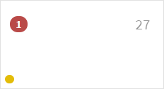
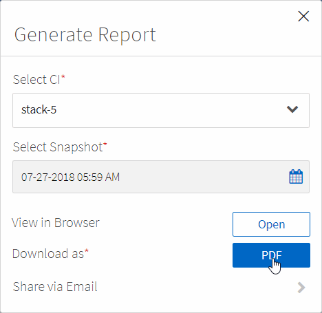
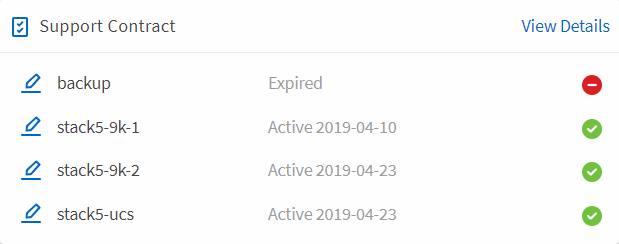

Monitoring your converged infrastructure
Contributors
 Download PDF of this page
Download PDF of this page
You can monitor your converged infrastructure by responding to alerts, reviewing a history of changes, and generating reports that provide a holistic view of an infrastructure.
Reviewing alerts for failed rules and warnings
Converged Systems Advisor continuously monitors your infrastructure and generates warnings and failures to ensure that the system is configured and performing to best practices.
-
Log in to the Converged Systems Advisor portal and click Rules.
The Rules page displays a summary of all rules. The status for each rule is either Pass, Warning, or Fail.
-
Click the filter icon in the Status column and select Fail, Warning, or both.

-
Review details about individual rules by clicking the arrow next to the Status column.

-
Follow the instructions in the resolution to fix the issue.
If needed, review the configuration history for the infrastructure to help you resolve the issue.
The status for the rules that you addressed should display as Pass after the agent’s next collection period.
Remediating failed rules
Converged Systems Advisor can resolve some failed rules for you by correcting the underlying issue with the converged infrastructure.
-
You must have the Premium license.
-
You must be assigned as an owner of the converged infrastructure.
-
Log in to the Converged Systems Advisor portal and click Rules.
The Rules page displays a summary of all rules. The status for each rule is either Pass, Warning, or Fail.
-
Select Filter rules that can be remediated.
-
Expand the rule that you want to resolve.
-
Click
 in the top right corner of the expanded rule.
in the top right corner of the expanded rule.If the icon is disabled, it’s either because the agent is offline, you don’t have Owner privileges, or because you don’t have a Premium license.
-
If necessary, fill in the input values.
Depending on the failed rule, some input values are necessary to resolve the issue.
-
If you want a data collection to be taken after the successful completion of the remediation, then select the option Collect When Remediation Job Completes.
-
Click Run remediation.
-
Click Confirm.
-
To view actions being taken to resolve failed rules, click the Operations icon and selection Remediation Action.

Suppressing failed rules
Converged Systems Advisor allows you to suppress rules so that do not show up in dashboard and no longer send email notifications on rule failure.
For example, enabling telnet is not recommended, but if you prefer to enable it, you can suppress the rule.
You must have the Premium license to configure notifications.
-
From the Dashboard, click Rules.
-
Find the rules that you are looking for by filtering the contents of the table.
-
Select one or more rows for rules that have a status of Warning or Fail and then click the Alerts icon.

-
Select a duration and then click Submit.
| If you want to enable the alerts, follow these same steps and select End Suppression. |
Converged Systems Advisor no longer notifies you about the rule for the specified duration and the rule will no longer be visible in the dashboard.
Displaying suppressed rules
You can view the list of rules that have been suppressed and, if desired, select to end the suppression.
-
Click the Settings icon and select Suppressed Rules.

-
Select the suppressed rules that you want to begin displaying.
-
Click the Alerts icon.
-
Select End Suppression and then click Submit.
Alerts are enabled for the selected rule and the rule is displayed in the Rules table and dashboard.
Reviewing the history for an infrastructure
When you receive an alert about a failed rule, you can view a history of what changed in the configuration to help you resolve the issue.
-
Select a converged infrastructure.
-
Click More > History.

-
Click a day on the calendar to view the number of warnings and failures that were identified during each data collection.
The number that appears for each day corresponds to the number of times that the agent collected data. For example, if you keep the default collection interval of 24 hours, you should see one collection per day. The following image shows a single collection on the 27th of the month.

-
To view more details about the data that was collected, click Go to CI Dashboard for a collection.
-
If needed, view the history for the last time that no warnings or failures were identified.
Comparing the data between the two collection periods can help you identify what changed.
Generating reports
If you have a Premium license, you can generate several types of reports that provide details about the current status of your converged infrastructure: an inventory report, a health report, an assessment report, and more.
-
Click Reports.
-
Select a report and click Generate.
-
Choose your options for the report:
-
Select a converged infrastructure.
-
Optionally change from the most recent data collection to a previous one.
-
Choose how you want to view the report: in your browser, as a downloaded PDF, or via email.

-
Converged Systems Advisor generates the report.
Tracking support contracts
You can add details about support contracts for each device in a configuration: the start date, end date, and contract ID. This enables you to easily track the details in a central location so you know when to renew support contracts for each device.
-
Click Select a CI and select the converged infrastructure.
-
In the Support Contract widget, click the Edit contract icon.
-
Select the Start Date and End Date and enter the Contract ID.
-
Click Submit.
-
Repeat the steps for each device in the configuration.
Converged Systems Advisor now displays the support contract details for each device. You can easily see which devices have active and expired support contracts.

 Edit on GitHub
Edit on GitHub